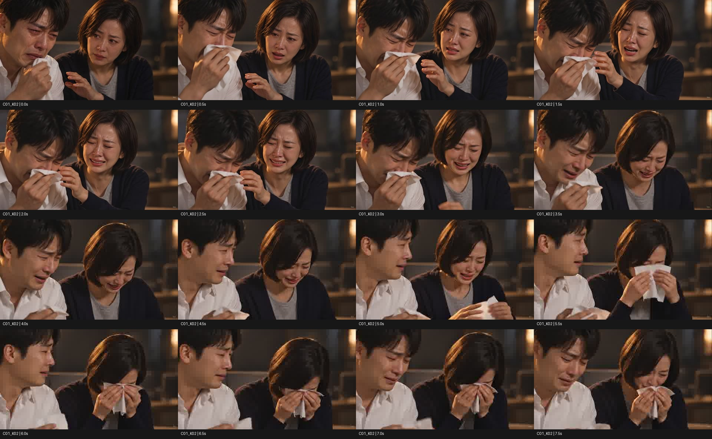

2026-10-16 · Veo 3.1 Fast · 8초 · 1280×720 · 24fps · 원본 MP4
원본 MP4 다운로드 · 실행 기록 · 검수 기록
잔액 50 → 30. 오디오 트랙 있음. 음성 내용·립싱크는 미검토.
약 5초부터 두 번째 손수건이 등장해 계획한 6초 전체 사용은 보류합니다. 앞 약 4.5초는 부분 후보이며 정확한 트림점은 미확정입니다.

세 검수자 독립 검토 및 교차검증. 연속 재생·청취를 대신하지 않습니다. 원본은 재인코딩하지 않았습니다.